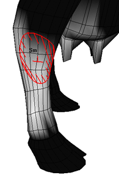

可以使用“绘制簇权重工具”(Paint Cluster Weights Tool)（与绘制簇变形器权重时的工具相同）绘制刚性蒙皮点权重。有关“绘制簇权重工具”(Paint Cluster Weights Tool)的详细信息，请参见“变形 > (绘制权重)簇”(Deform > (Paint Weights) Cluster)。
注：
绘制刚性蒙皮点权重使用的绘制工具不同于绘制平滑蒙皮点权重的工具。
在刚性绑定蒙皮上绘制权重
- 选择要在其上绘制权重的刚性蒙皮对象。
- 进入平滑着色处理模式（选择“着色 > 对所有项目进行平滑着色处理”(Shading > Smooth Shade All)或按默认热键 5）。
- 选择“变形 > (绘制权重)簇”(Deform > (Paint Weights) Cluster) >
 。
。
- 确定已启用“显示”(Display)区域中的“颜色反馈”(Color Feedback)。“颜色反馈”(Color Feedback)可通过将曲面上的权重表示为灰度值来帮助对其进行识别（值越小越暗，值越大越亮）。
提示：
可以使用默认热键
 +c （Linux 和 Windows）或 +c (Mac OS X) 在“工具设置”(Tools Settings)编辑器之外启用和禁用“颜色反馈”(Color Feedback)。
+c （Linux 和 Windows）或 +c (Mac OS X) 在“工具设置”(Tools Settings)编辑器之外启用和禁用“颜色反馈”(Color Feedback)。
- 选择要绘制权重的关节簇。在“工具设置”(Tool Settings)窗口的“绘制属性”(Paint Attributes)区域中，单击“jointClustern.weights”按钮，并从弹出菜单中选择相应的关节簇权重名称。
提示：
如果要在一个曲面上绘制，可以跳过步骤 3，通过在曲面上单击鼠标右键 (
 ) 并从“绘制”(Paint)命令子菜单中选择相应的关节簇权重名称来选择关节簇，而无需打开“工具设置”(Tool Settings)窗口。
) 并从“绘制”(Paint)命令子菜单中选择相应的关节簇权重名称来选择关节簇，而无需打开“工具设置”(Tool Settings)窗口。
- 选择笔刷、绘制操作和值，并根据需要定义其他设置。请参见“变形 > (绘制权重)簇”(Deform > (Paint Weights) Cluster)。
- 在簇上拖动笔刷。
提示：可以从一个簇快速拾取权重值，然后使用热键在另一个或同一个簇上绘制权重值。执行下列操作：
- 选择具有要拾取的权重值的簇。
- 按住“拾取颜色模式”(Pick Color Mode)热键（默认热键：/），单击具有要拾取权重值的簇区域，然后松开热键。
- 如果在同一个簇上绘制拾取的权重，请在簇上拖动笔刷。
- 如果在另一个簇上绘制拾取的权重，请选择该簇，然后在其上拖动笔刷。